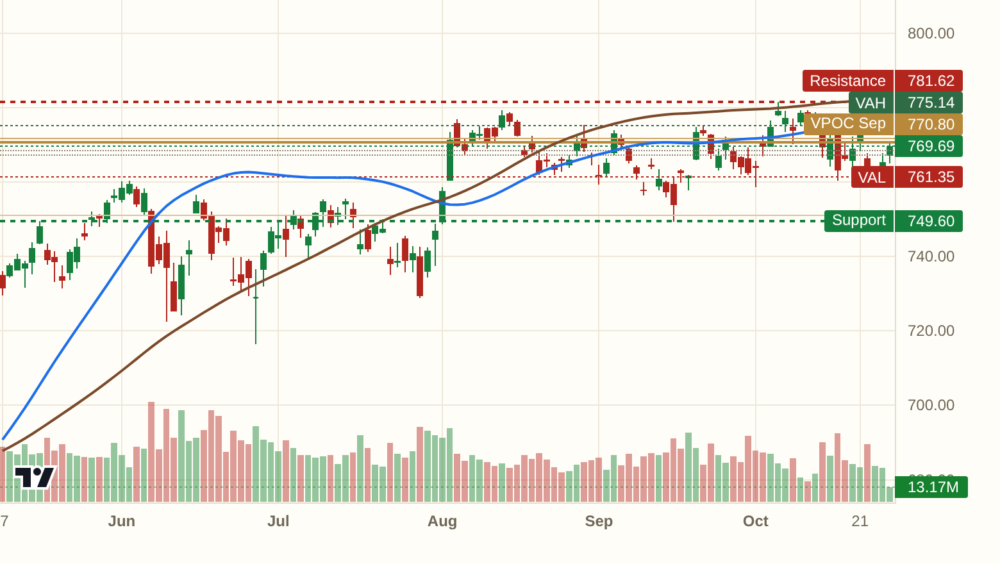
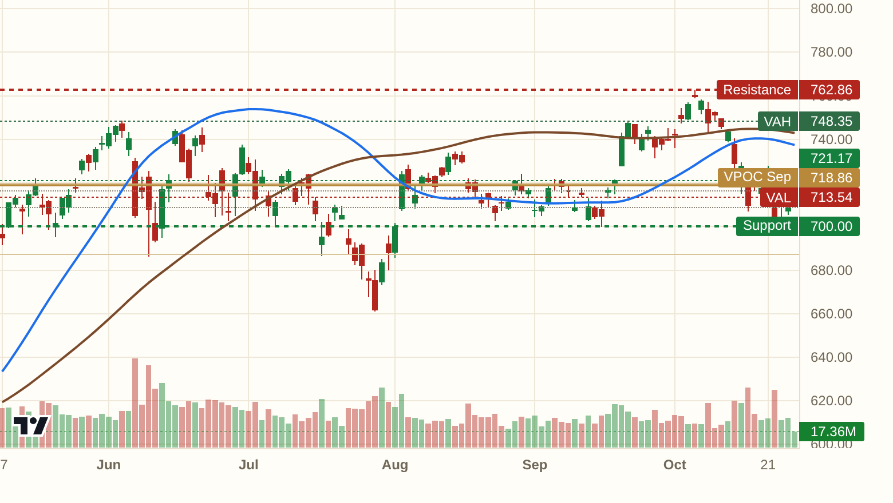
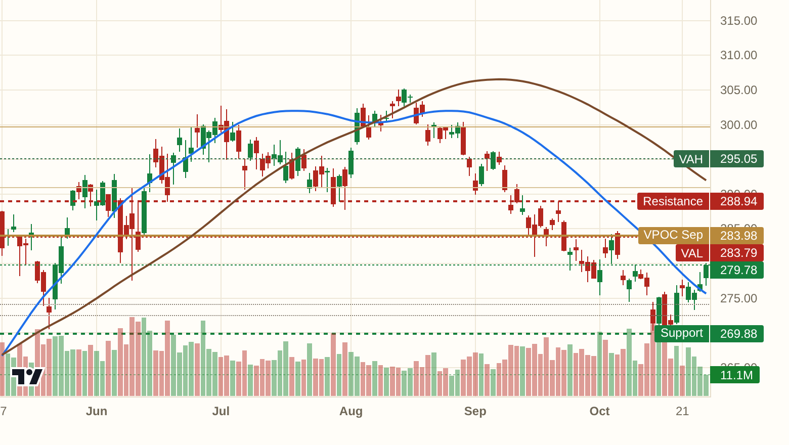
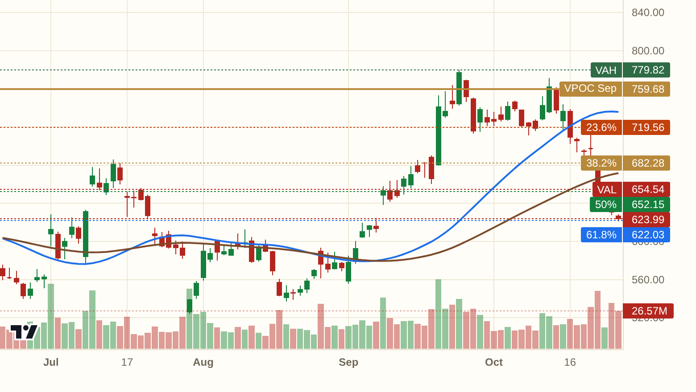
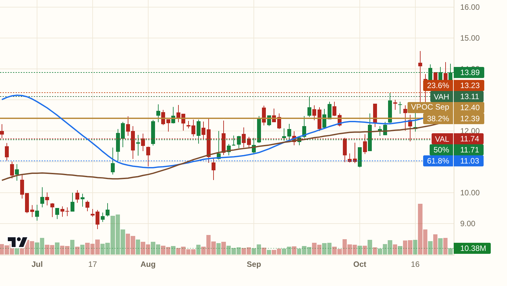
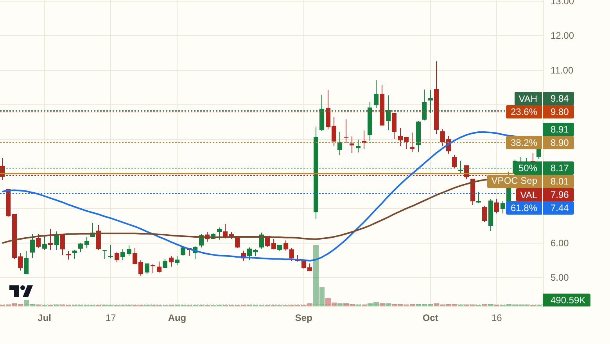
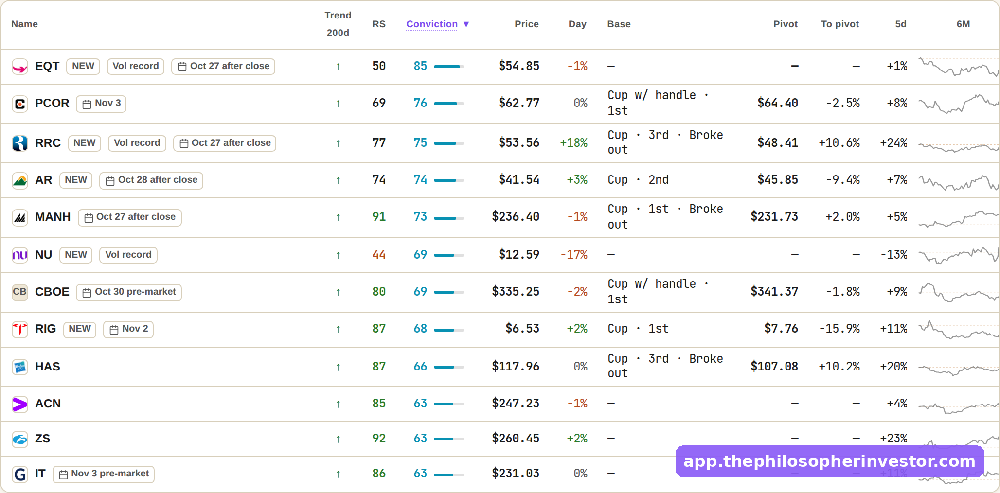

Hello my friends,
Yesterday's wall above sat at 770.8. SPY ran right into it, Tech did all the heavy lifting, and every desk I know is lighter into tomorrow's FOMC.
SPY at 769.69, kissing the Sep VPOC at 770.8. The magnet and the wall are the same number tonight. Trend spine still bearish, the strength here is rented.

QQQ at 721.17, pinned to the Aug magnet. The armored zone at 723.9 is the gate. Clear it on the FOMC print and the sellers lose their anchor.

IWM at 279.78 finally cleared the 100 HMA. The Sep VAL at 283.79 is the only ceiling between here and real air above.

The HHH long from last Friday worked. In at 66.11, up +13.3% and sitting above the targets. The book is public, wins and stops.
The whole book, wins and stops included: https://app.thephilosopherinvestor.com/portfolios?utm_source=daily
The desk flagged it overnight at 623.99, well below the monthly magnet. Trend spine on the longer frame is still bullish, and the Aug VAH should catch any further flush. The way I read it, this is the trade back toward the 52-week high. Plan: work in near 630.56, wrong below 578.72, first target 777.59, about 2.8:1. Earnings risk sits in the back of my head, size accordingly.

Came off the Volume Leaders board. Unusually heavy volume plus post-earnings drift, last 13.89, closing in on the 15.09 high. Sits above the Sep magnet at 12.4. Wrong on acceptance below 10.09. The full plan lives on the board.

The Dip board caught it. A controlled pullback inside an uptrend, last 8.91, above the Sep VPOC at 8.01. Wrong below 7.14. Earnings sit 36 days out, give it room.

The Quiet Accumulation board lit up with 85 fresh names at Monday's close, and the flow tape leans calls on AMD, MSFT and INTC. Five names stack on three or more boards tonight, with CCI and NOW leading the confluence. Read together, institutions are nibbling under the FOMC overhang. The internals are quietly rebuilding while the headlines are still holding their breath. *[screenshot: the board, straight from the app]*
Every setup above sits on its board with the full levels: https://app.thephilosopherinvestor.com/screeners?utm_source=daily
Tonight's levels are good for tonight. The boards re-rank at every close, and tomorrow's post starts from scratch.
Everything in this post comes straight from the app: the live boards, the full levels on every idea, the flow. https://app.thephilosopherinvestor.com/?utm_source=daily
$20 a month or $200 a year, billed on Substack. Cancel anytime. Subscribe here: https://philosopherinvestor.substack.com/subscribe
This is not financial advice. Do your own research and manage your risk.
See you tomorrow,
Daniel
Tech leads SPY into the FOMC
Hello my friends,
Yesterday's wall above sat at 770.8. SPY ran right into it, Tech did all the heavy lifting, and every desk I know is lighter into tomorrow's FOMC.
SPY at 769.69, kissing the Sep VPOC at 770.8. The magnet and the wall are the same number tonight. Trend spine still bearish, the strength here is rented.
*[chart: $SPY]*
QQQ at 721.17, pinned to the Aug magnet. The armored zone at 723.9 is the gate. Clear it on the FOMC print and the sellers lose their anchor.
*[chart: $QQQ]*
IWM at 279.78 finally cleared the 100 HMA. The Sep VAL at 283.79 is the only ceiling between here and real air above.
*[chart: $IWM]*
The HHH long from last Friday worked. In at 66.11, up +13.3% and sitting above the targets. The book is public, wins and stops.
The whole book, wins and stops included: https://app.thephilosopherinvestor.com/portfolios?utm_source=daily
The desk flagged it overnight at 623.99, well below the monthly magnet. Trend spine on the longer frame is still bullish, and the Aug VAH should catch any further flush. The way I read it, this is the trade back toward the 52-week high. Plan: work in near 630.56, wrong below 578.72, first target 777.59, about 2.8:1. Earnings risk sits in the back of my head, size accordingly.
*[chart: $META]*
Came off the Volume Leaders board. Unusually heavy volume plus post-earnings drift, last 13.89, closing in on the 15.09 high. Sits above the Sep magnet at 12.4. Wrong on acceptance below 10.09. The full plan lives on the board.
*[chart: $CLF]*
The Dip board caught it. A controlled pullback inside an uptrend, last 8.91, above the Sep VPOC at 8.01. Wrong below 7.14. Earnings sit 36 days out, give it room.
*[chart: $CHPT]*
The Quiet Accumulation board lit up with 85 fresh names at Monday's close, and the flow tape leans calls on AMD, MSFT and INTC. Five names stack on three or more boards tonight, with CCI and NOW leading the confluence. Read together, institutions are nibbling under the FOMC overhang. The internals are quietly rebuilding while the headlines are still holding their breath. *[screenshot: the board, straight from the app]*
Every setup above sits on its board with the full levels: https://app.thephilosopherinvestor.com/screeners?utm_source=daily
Tonight's levels are good for tonight. The boards re-rank at every close, and tomorrow's post starts from scratch.
Everything in this post comes straight from the app: the live boards, the full levels on every idea, the flow. https://app.thephilosopherinvestor.com/?utm_source=daily
$20 a month or $200 a year, billed on Substack. Cancel anytime. Subscribe here: https://philosopherinvestor.substack.com/subscribe
This is not financial advice. Do your own research and manage your risk.
See you tomorrow,
Daniel
